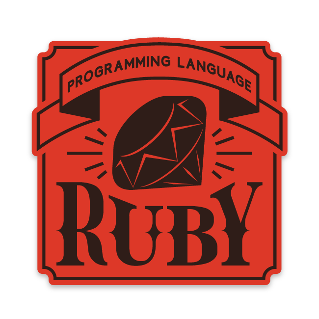

Which Epicodus course is right for you!
Answer a few questions and find out which course may fit the best with your interests and plans for the future.

You will get the most out of the C#/.NET course.
The C# ("C sharp") programming language is most commonly used with the .NET framework. Students who are well-versed in C# programming can use it to creat client applications, database applications, distributed components, and much more. Students who learn C# programming and combine it with their knowledge of the .NET framework can target larger enterprises, government agencies, and companies serving enterprise and government clients for employment. Companies using C# and .NET who have hired Epicodus graduates include Windsor and Incomm.

You will get the most out of the Ruby/Rails course.
Ruby is a programming language focused on simplicity and productivity. It has an elegant syntax that is natural to read and easy to write. The Ruby programming language is most commonly used with the Ruby on Rails framework. Ruby and Rails are typically used by younger companies and startups, especially for building interactive web applications. Companies using Ruby and Rails who have hired Epicodus graduates include New Relic, LivingSocial, and SpendWell.